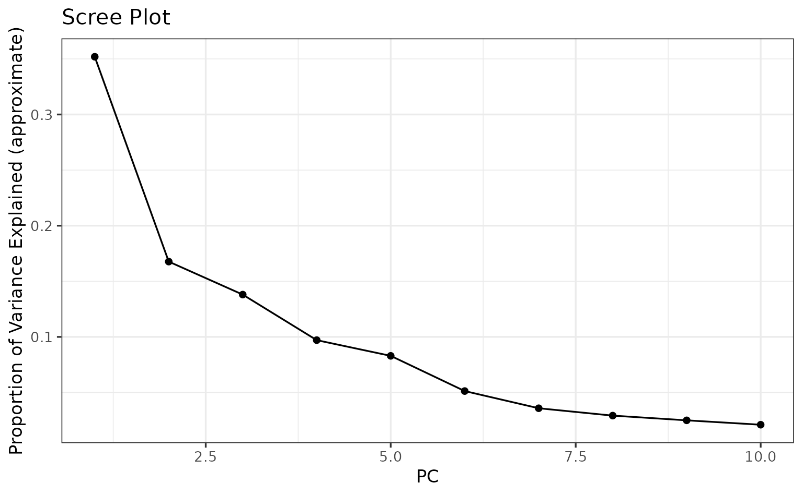
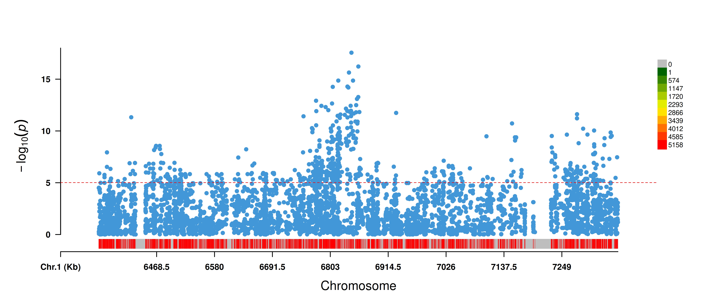
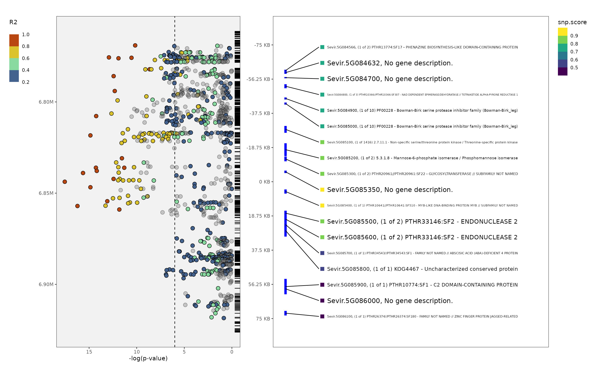

Introduction
PanvaR is a data integration tool that seeks to speed up fine-mapping of GWAS peaks.
Genome-wide association studies (GWAS) are powerful tools that test entire genomes for regions where variability in the markers are correlated with variability in a certain phenotype. However, due to the phenomenon of linkage disequilibrium (LD), the top associated marker may not necessarily be in the specific gene that is causing the variability in phenotype. Additionally, multi-locus models, which have proven to be a powerful flavor of GWAS, collapse signal from these locally correlated snps that are in LD into a single snp that is output by the model. This obfuscates information about association of snps with the phenotype in the region of an identified locus. Finally, GWAS is often run on a smaller number of snps to manage computational resources. Once a peak is identified however, a denser set of snps may be used to further pinpoint causal genes. All of these reasons point towards an extra step of fine-mapping between GWAS and candidate gene identification.
PanvaR makes this critical step of association mapping easier and quicker by optionally re-running GWAS using a single-locus model, visualizing a gwas peak alongside genes and retaining flexibility to include user defined measures of snp impact and gene importance. Overall, the goal of the package is to make combining different types of data quicker to more efficiently prioritize candidate genes underlying QTL.
The workflow follows 4 major steps:
- Format inputs
Standardize inputs and do some QC to make the rest of the analysis easier.
- Run GWAS
Re-run GWAS using a single-locus model to generate p-values for all snp’s. Can optionally provide your own pre-computed p-values as well. This step only needs to be run once for a given dataset.
- Create tables
PanvaR creates the tabular output for a given tag snp. This includes gene and snp based outputs generating snp scores and LD calculations. Steps 3 and 4 are run on each tag snp.
- Plot
Lastly, the program will create visualizations from the tabular results that can be customized based on user preferences.
Dependencies
plink2
PanvaR makes use of plink2 for much of its snp file manipulation. Please download the program for your operating system from the website here.
rMVP
rMVP is used as the package’s GWAS software. This does not need to be downloaded separately as it will be loaded by installing the panvaR package but this is noted here as an acknowledgement. See their documentation for any issues pertaining to this aspect of the pipeline.
Example data
Example data
The data for this vignette comes from this paper. The paper identified a strong GWAS peak for shattering on chromosome 5. The genotype file has been subset to only include a small range around this peak.
1) Formatting inputs
PanvaR was designed as a flexible tool. As such, much of its core functionality of data integration and visualization can be generated with different combinations of input data.
Required inputs
Set of snps in either vcf or bed/bim/fam format
-
One of:
Phenotype file
Pre-computed gwas results with p-values
Recommended inputs
- Annotation table that has gene start and end positions and a short description of predicted function
Additional inputs
A vcf that has been annotated by snpEff. See here.
Variant effect scores such as the output of a program like PROVEAN or from a DNA language model like Plant Caduceus.
Other quantitative or qualitative scores at the snp or gene level that a user finds useful.
Initialize options
We need to use a function to download plink2 for use in this vignette. The plink path should be modified for your own machine.
plink.path <- bigsnpr::download_plink2()We can set these options for the input formatting and GWAS functions to access.
# set the path to plink
set_plink_path(plink.path)
# set a prefix for outputs generated by this run
set_panvar_prefix("PanvarExample")
# set a directory to output results and intermediate files
current.directory <- tempdir()
set_out_dir(current.directory)Standardize inputs
This function will do some basic qc and standardize some inputs
before we run the gwas. By default it will filter for minor allele
frequency and missing rate. It will also remove genotypes that do not
have a corresponding phenotype value. plink2 is called to
produce a filtered bed file and rMVP::MVP.Data() is called
to format data for use in rMVP . This also attempts to
standardize marker.ID’s by setting them to CHR-POS in the
filtered bed file.
genotype.path <- system.file("extdata",
"Setaria_shattering_example_pruned.bed",
package = "panvaR")
phenotype.path <- system.file("extdata",
"Setaria_shattering_example_phenotype.tsv",
package = "panvaR")
make_panvar_inputs(genotype.path = genotype.path,
phenotype.path = phenotype.path)
#> Removed 0 samples due to NA values in phenotype.
#> [1] "/tmp/RtmpFfgcjh/PanvarExample_PlinkQC_maf0.05_missing0.1"
#> PLINK v2.0.0-a.7.1LM AVX2 Intel (4 May 2026) cog-genomics.org/plink/2.0/
#> (C) 2005-2026 Shaun Purcell, Christopher Chang GNU General Public License v3
#> Logging to /tmp/RtmpFfgcjh/PanvarExample_PlinkQC_maf0.05_missing0.1.log.
#> Options in effect:
#> --allow-extra-chr
#> --bfile /home/runner/work/_temp/Library/panvaR/extdata/Setaria_shattering_example_pruned
#> --geno 0.1
#> --keep /tmp/RtmpFfgcjh/Panvar_list.of.samples.with.phenotype_shattering.txt
#> --maf 0.05
#> --make-bed
#> --out /tmp/RtmpFfgcjh/PanvarExample_PlinkQC_maf0.05_missing0.1
#> --set-all-var-ids @-#
#>
#> Start time: Tue Jul 7 15:41:36 2026
#> 15989 MiB RAM detected, ~14198 available; reserving 7994 MiB for main
#> workspace.
#> Using up to 4 compute threads.
#> 598 samples (0 females, 0 males, 598 ambiguous; 598 founders) loaded from
#> /home/runner/work/_temp/Library/panvaR/extdata/Setaria_shattering_example_pruned.fam.
#> Note: 1 nonstandard chromosome code present.
#> 7715 variants loaded from
#> /home/runner/work/_temp/Library/panvaR/extdata/Setaria_shattering_example_pruned.bim.
#> Note: No phenotype data present.
#> --keep: 215 samples remaining.
#> 215 samples (0 females, 0 males, 215 ambiguous; 215 founders) remaining after
#> main filters.
#> Calculating allele frequencies... 0%done.
#> --geno: 0 variants removed due to missing genotype data.
#> 2557 variants removed due to allele frequency threshold(s)
#> (--maf/--max-maf/--mac/--max-mac).
#> 5158 variants remaining after main filters.
#> Writing /tmp/RtmpFfgcjh/PanvarExample_PlinkQC_maf0.05_missing0.1.fam ... done.
#> Writing /tmp/RtmpFfgcjh/PanvarExample_PlinkQC_maf0.05_missing0.1.bim ... done.
#> Writing /tmp/RtmpFfgcjh/PanvarExample_PlinkQC_maf0.05_missing0.1.bed ... 0%done.
#> End time: Tue Jul 7 15:41:36 2026
#> QC was successful, output stored at /tmp/RtmpFfgcjh/PanvarExample_PlinkQC_maf0.05_missing0.1
#> Using rMVP to calculate PC's.
#> Preparing data for MVP...
#> Reading file...
#> Preparation for MAP data is done within 0s
#> inds: 215 markers: 5158
#> Loading genotype at a step of 10000...
#> Preparation for GENOTYPE data is done within 0s
#> 215 common individuals between phenotype and genotype.
#> Preparation for PHENOTYPE data is Done within 0s
#> No NA in genotype, imputation has been skipped.
#> MVP data prepration accomplished successfully!2) Running GWAS
If you aren’t sure how many principal components to use in the GWAS model to control for population structure it might be a good idea to make a scree plot to select a reasonable number to include.
filtered.bedfile.fullpath <- list.files(options()$panvar_outdir,
pattern = "bed$",
full.names = TRUE)
plot_pc_scree(bedfile.path = filtered.bedfile.fullpath, num.pcs = 10)
We’ll use the first 2 PC’s for this example.
Different GWAS models
You can run a generalized linear model (GLM) or a mixed-linear model (MLM). A GLM uses only PC’s to control for population structure. An MLM uses both PC’s and the kinship matrix. Due to the extra control for population structure, an MLM model is typically more conservative and therefore less likely to have false positives but can also over-correct for population structure leading to false negatives when compared directly to GLM.
The GWAS function has been designed to be used with the
make_panvar_inputs() function but can also be used with
custom inputs. If the inputs.dir argument is specified the
function will attempt to automatically use required files from this
directory. If supplying other inputs, they should be in a format that
rMVP::MVP() can accept. See the documentation for
panvar_mvp_gwas().
Let’s run gwas:
panvar_mvp_gwas(inputs.dir = options()$panvar_outdir,
npcs = 2,
gwas.model = "GLM",
output.manhattan = T)
#> Searching for prefix: PanvarExample in directory: /tmp/RtmpFfgcjh
#> Found the following files:
#> PanvarExample_PlinkQC_maf0.05_missing0.1.bed,
#> PanvarExample_PlinkQC_maf0.05_missing0.1.bim,
#> PanvarExample_PlinkQC_maf0.05_missing0.1.fam,
#> PanvarExample_PlinkQC_maf0.05_missing0.1.log,
#> PanvarExample.geno.bin,
#> PanvarExample.geno.desc,
#> PanvarExample.geno.ind,
#> PanvarExample.geno.map,
#> PanvarExample.phe
#> Reading in inputs.
#> Checking phenotype table.
#> Running GWAS
#> ======================== Welcome to MVP =========================
#> an R package for Memory-efficient, Visualization-enhanced
#> and Parallel-accelerated genome-wide association study
#> __ __ __ __ ___
#> | \/ | \ \ / / | _ \
#> | |\/| | \ V / | _/
#> |_| |_| \_/ |_| Version: 1.4.6
#> Design & Maintain: Lilin Yin, Haohao Zhang, and Xiaolei Liu
#> Contributors: Zhenshuang Tang, Jingya Xu, Dong Yin, Zhiwu
#> Zhang, Xiaohui Yuan, Mengjin Zhu, Shuhong Zhao, Xinyun Li
#> Mailto: xiaoleiliu@mail.hzau.edu.cn, ylilin@mail.hzau.edu.cn
#> =================================================================
#> Start: 2026-07-07 15:41:37 UTC
#> Input data has 215 individuals and 5158 markers
#> Markers are detected to be stored by column
#> Analyzed trait: shattering
#> Number of threads used: 4
#> OpenBLAS Library is detected, nice job!
#> Calculate allele frequency...
#> Computing GRM for 215 individuals using 5158 markers with a step of 10000
#> Deriving relationship matrix successfully
#> Eigen Decomposition on GRM
#> Deriving PCs successfully
#> Number of PCs included in GLM: 2
#> -------------------------GWAS Start-------------------------
#> General Linear Model (GLM) Start...
#> scanning...
#> Genomic inflation factor (lambda): 10.2215
#> Significant level: 9.69e-06
#> ---------------------Visualization Start--------------------
#> Phenotype distribution Plotting
#> PCA plot2d
#> SNP_Density Plotting
#> Warning in max(numeric.chr, na.rm = TRUE): no non-missing arguments to max;
#> returning -Inf
#> Circular_Manhattan Plotting shattering.GLM
#> Rectangular_Manhattan Plotting shattering.GLM
#> Q_Q Plotting shattering.GLM
#> Results are stored at Working Directory: /tmp/RtmpFfgcjh
#> End: 2026-07-07 15:41:38 UTC
#> Total running time: 1s
#> ===================== MVP ACCOMPLISHED =====================Here is the manhattan:
knitr::include_graphics("shattering.GLM.Rectangular-Manhattan.PanvarExample.jpg",
dpi = 600)
Identifying QTL
The first step in a typical GWAS analysis might be identifying some
regions that we want to look at closer. We can identify discrete regions
or QTL using p-values from our GWAS and linkage disequilibrium.
Following language used by plink2 we refer to these groups
of snps as clumps. A function is presented to sort snps into clumps.
This follows a similar logic to that of plink2 --clump .
See here.
Typically, QTL are identified in the original GWAS. The method
presented in the package (snp_make_clumps) is likely not
ideal as it is poorly optimized especially on larger numbers of
markers.
# get bedfile name
filtered.bedfile <- list.files(options()$panvar_outdir, pattern = "bed$")
# read in gwas results
gwas.path <- list.files(options()$panvar_outdir,
pattern = "GWASresults\\.csv$",
full.names = TRUE)
gwas.df <- read.csv(gwas.path)
# subset to only top p-value snps
gwas.df_subset <- gwas.df %>%
filter(LOGPVAL > 8)
# clump
clumped.df <-
snp_make_clumps(geno.bed.filename = filtered.bedfile,
geno.bed.dir = current.directory,
gwas.res = gwas.df,
pvals.in.log = F,
window = 500,
ld.thresh = .2)
#> Markers in the following form in bed file: Chr_05-6357130
#> Creating clumps...
#> | |===================== | 30% | |============================== | 43% | |==================================== | 51% | |============================================ | 63% | |============================================= | 65% | |=============================================== | 66% | |=============================================== | 67% | |=============================================== | 68% | |================================================ | 69% | |================================================= | 70% | |===================================================== | 75% | |===================================================== | 76% | |====================================================== | 77% | |======================================================== | 81% | |=============================================================== | 90% | |=============================================================== | 91% | |================================================================ | 91% | |================================================================ | 92% | |================================================================= | 93% | |================================================================== | 94% | |================================================================== | 95% | |=================================================================== | 95% | |=================================================================== | 96% | |==================================================================== | 97% | |==================================================================== | 98% | |===================================================================== | 98% | |===================================================================== | 99% | |======================================================================| 99% | |======================================================================| 100%
head(clumped.df)
#> marker.ID clump_num
#> 1 Chr_05-6357216 1
#> 2 Chr_05-6357799 1
#> 3 Chr_05-6358406 1
#> 4 Chr_05-6359285 1
#> 5 Chr_05-6360245 1
#> 6 Chr_05-6362641 1Using a process like this to decide on specific regions as well as snps that represent those regions is an important first step in analyzing a genome wide set of results.
We will use the most significant p-value snp in our top clump.
3) Creating tables
After having identified a set of tag snps, steps 3 and 4 will be run once on each of these tag snps to generate tabular output and plots.
Including gene information
As mentioned in the section on inputs, panvaR can accept a number of different data types to generate gene based and snp based tables.
To use gene annotation information, a table of gene locations and
annotations is required. This is usually generated from a .gff
annotation file. Try the function read.gff() from the
ape package, to manipulate these files in R. An example of
the format of the table:
annotation.table <- read.csv(system.file("extdata",
"Setaria_shattering_annotation.csv",
package = "panvaR"))
head(annotation.table)
#> CHR geneID start end
#> 1 5 Sevir.5G096400 7845399 7849101
#> 2 5 Sevir.5G082600 6600913 6602150
#> 3 5 Sevir.5G080400 6415706 6419522
#> 4 5 Sevir.5G084050 6725589 6729788
#> 5 5 Sevir.5G083800 6699949 6705777
#> 6 5 Sevir.5G075300 6037623 6038480
#> annotation
#> 1 (1 of 5) PTHR24078:SF279 - DUPLICATED SANT DNA-BINDING DOMAIN-CONTAINING PROTEIN
#> 2 (1 of 3) PTHR10315//PTHR10315:SF33 - SEVEN IN ABSENTIA HOMOLOG // SUBFAMILY NOT NAMED
#> 3 (1 of 4) K02133 - F-type H+-transporting ATPase subunit beta (ATPeF1B, ATP5B, ATP2)
#> 4 No gene description.
#> 5 (1 of 1) PTHR19856 - WD-REPEATCONTAINING PROTEIN WDR1
#> 6 No gene description.We will use this gene annotation table to help line up genes and GWAS results. First, read in gwas results generated from last step and format chromosome column.
gwas.path <- list.files(options()$panvar_outdir,
pattern = "GWASresults\\.csv$",
full.names = TRUE)
# match chromosome format, want to use numeric style chromsome, see note below
head(annotation.table$CHR)
#> [1] 5 5 5 5 5 5
gwas.df <- read.csv(gwas.path)
head(gwas.df$CHR)
#> [1] "Chr_05" "Chr_05" "Chr_05" "Chr_05" "Chr_05" "Chr_05"
gwas.df <- gwas.df %>%
mutate(CHR = panvaR::get_chrom_from_id(marker.ID, sep = "-"))
head(gwas.df$CHR)
#> [1] 5 5 5 5 5 5Use these inputs to generate 2 tables at the gene and snp level.
Also, retain some info about the tag.snp and/or
qtl.df .
# make the tables
tables <- make_panvar_tables(gwas.res = gwas.df,
tag.snp = my.tag.snp,
# qtl.df = qtl.df.test,
annotation.table = annotation.table,
plink.path = options()$plink_path,
pvals.in.log = F,
geno.bed.filename = filtered.bedfile,
geno.bed.directory = current.directory,
window = 250,
compute.scores = T,
snp.to.gene.vars = c("LD", "snp.score"),
snp.to.gene.buffer = 5)
#> Calculating LD
#> Computing scores
#> No user defined variables for scores specified. Using equally weighted Distance, Pvalue and LD.
#> Generating snp to gene correspondence
names(tables)
#> [1] "gwas" "anno" "key.snp" "qtl.snps"
head(tables$gwas)
#> # A tibble: 6 × 13
#> # Rowwise:
#> marker.ID CHR POS A1 A2 MAF EFF SE PVAL LOGPVAL LD
#> <chr> <dbl> <dbl> <chr> <chr> <dbl> <dbl> <dbl> <dbl> <dbl> <dbl>
#> 1 5-6593889 5 6593889 C T 0.395 1.51 0.344 1.79e-5 4.75 0.263
#> 2 5-6594203 5 6594203 C T 0.4 1.60 0.339 4.18e-6 5.38 0.269
#> 3 5-6594221 5 6594221 C T 0.270 0.374 0.123 2.55e-3 2.59 0.0146
#> 4 5-6594555 5 6594555 C T 0.398 1.32 0.333 9.71e-5 4.01 0.257
#> 5 5-6594565 5 6594565 T C 0.323 0.170 0.121 1.60e-1 0.796 0.186
#> 6 5-6595115 5 6595115 A G 0.409 1.25 0.298 4.23e-5 4.37 0.279
#> # ℹ 2 more variables: snp.score <dbl>, genes_near_snp <chr>
head(tables$anno)
#> # A tibble: 6 × 8
#> # Rowwise:
#> CHR geneID start end annotation dist.from.snp LD snp.score
#> <int> <chr> <int> <int> <chr> <dbl> <dbl> <dbl>
#> 1 5 Sevir.5G082600 6600913 6602150 (1 of 3) P… 241592 0.309 0.182
#> 2 5 Sevir.5G084050 6725589 6729788 No gene de… 113954 0.530 0.430
#> 3 5 Sevir.5G083800 6699949 6705777 (1 of 1) P… 137965 0.320 0.333
#> 4 5 Sevir.5G083600 6687900 6690770 (1 of 1) P… 152972 0.491 0.329
#> 5 5 Sevir.5G086500 6947423 6948860 (1 of 1) P… 103681 0.385 0.373
#> 6 5 Sevir.5G083550 6674012 6674119 No gene de… 169623 0.512 0.301Snp scores
A flexible scoring system has been implemented to allow quantification of the likelihood of a snp being causal. Users supply the parameters they wish to include as well as the direction that indicates more impactfulness (higher or lower value). The user can also select how each of these values is weighted in the final score.
4) Plotting
plot_panvar(panvar.table.list = tables,
pvals.in.log = F,
plot.r2.thresh = .2,
unplotted.alpha = .4,
window = 75,
sig.line = 6,
qualitative.annotation = NULL,
qualitative.shape.scale = NULL,
quantitative.annotation = NULL,
quantitative.fill.scale = NULL,
include.gene.id = T,
annotation.point.variable = "snp.score",
plot.effect = F
)
#> Making manhattan
#> Making annotation plot
#> Warning: Removed 1555 rows containing missing values or values outside the scale range
#> (`geom_rug()`).
A few notes
LD calculation
A main functionality of the package is to more easily calculate local
linkage disequilbrium around a given marker. panvaR uses
plink2 to generate pairwise LD to a single marker or a
group of markers within a set physical distance.
If supplying a group of markers via the qtl.df argument,
the output will have a single value for each snp in the window
representing the maximum LD of that marker to any snp in the
qtl.df.
You can create a table of LD in R2 in a window using the following function:
out_ld <-
get_ld_in_window(
tag.snp = my.tag.snp,
window = 500,
geno.bed = filtered.bedfile,
in.dir = current.directory
)
head(out_ld$table)
#> marker.ID CHR POS R2
#> 1 Chr_05-6357130 5 6357130 0.10427000
#> 2 Chr_05-6357216 5 6357216 0.21802200
#> 3 Chr_05-6357284 5 6357284 0.03239760
#> 4 Chr_05-6357327 5 6357327 0.01377000
#> 5 Chr_05-6357411 5 6357411 0.00551269
#> 6 Chr_05-6357799 5 6357799 0.20275900A note on chromsome names and marker.ID’s
As part of make_panvar_inputs() marker.ID’s are
standardized to be of the form CHR-POS as they are coded in
the input genotype file. This standardizes the marker.ID’s to have a
consistent form but does not alter the chromosome names.
Chromosome names can often have some leading characters e.g. “CHR01”.
To standardize chromosomes across different inputs, chromosome names are
often converted to a number using the function
get_chrom_from_id() . Some genotype files may include
things like scaffolds that cannot be easily assigned a chromosome
number. It is recommend to remove these from the input file before
running panvaR. Where applicable, the form of chromosome name is
indicated in the function documentation when a user supplied marker.ID
is required.